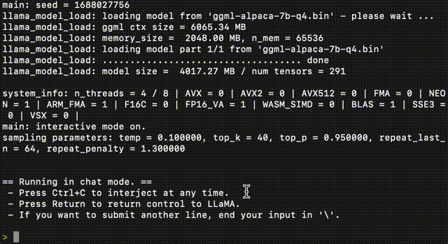

graph LR
Input --> A
style C fill:#8fbaff
style D fill:#8fbaff
style E fill:#8fbaff
style F fill:#8fbaff
style G fill:#ffffe0
Input --> B
A(( )) --- C(( ))
B(( )) --- C
A --- D(( ))
B --- D
A --- E(( ))
B --- E
A --- F(( ))
B --- F(( ))
C --- G(( ))
D --- G
E --- G
F --- G
G --> Output
Large Language Models
Notes for Physics 312 class readings
General overview/ideas
Before getting into the math and internal workings of a large language model, one of the readings in class looks at a specific example: ChatGPT, and how it works.
ChatGPT is an example of a large language model that functions like a chatbot. The post by Stephen Wolfram titled “What is ChatGPT doing … and why does it work?” [1] provides a basic picture of how LLMs (specifically ChatGPT) work.
Here are some key ideas from the post.
- ChatGPT creates human-intelligible text by adding one probable “word” at a time
The model chooses “probable words” based on data the model is trained on.
The most probable word is not necessarily what’s chosen (meaning there’s a random factor on choosing words — a “temperature” parameter).
- How are these probabilities calculated?
The probabilities are not derived empirically from data (the amount of text available is huge), and when considering consecutive words, the number of possibilities increase even more.
Large language models attempt to estimate the probability of occurrence of sequences even without seeing explicitly all possible combinations of words in text.
The latter sections go over neural networks (large language models are neural networks):
- Neural networks
Neural networks are composed of a layer of nodes called neurons: these neurons correspond to a simple numerical function
Neurons have incoming inputs with associated weights, and the value of each neuron depends on the values of previously connected neurons and an applied “activation” function. Mathematically:
\[ f[w \cdot x + b], x = \{x_1, x_2, …\} \] \(f\) is the form taken by the activation function, which generally introduces a non-linearity. \(w\) are weights, \(b\) are constants that are chosen per neuron (biases), and \(x\) are the inputs to the neuron.
Weights of the neurons in the network are adjusted at each step until it learns the target function.
A loss function (or a cost function) is computed to see “how far away” from the model is from the target.
Minimizing the loss function - gradient descent
- Considerations when training neural networks
Choosing neural net architecture
Getting/preparing the training data
- Instead of training from scratch: a) incorporate an already-trained neural net, b) use the neural net to generate more training examples
Determining the size of the neural network (depends on the perceived difficulty of the task)
Different choices for setting hyperparameters, loss functions, minimization of the loss function
Since neural networks take in numbers as inputs, text should be represented to numbers. How do large language models take in its inputs?
- Representing texts as numbers: embeddings
A word embedding can be thought of as laying out words in a “meaning space”.
You can extend this to expressing sequences of words as a collection of numbers.
In large language models, instead of words, the object of interest are tokens. Tokens can be less than a word (like a prefix, suffix, a sub-unit of a word).
Lastly, the most relevant part, at least for the class, is the internal workings of large language models. In the text [1], there is a section on what’s inside ChatGPT. * a GPT-3 network with 175 billion weights
the neural network architecture used is “transformer”
transformers have the notion of “attention”
embedding vectors for original tokens &rarr embedding vector goes through the layers of the neural network (feed-forward)
only specific neurons on different layers are connected (transformer architecture)
Summarizing these points, large language models are neural networks trained on large amounts of text, often resulting in models with millions to billions of parameters. Since neural networks take in numbers as input, words are converted into a numerical representation.
We’ll focus on key ideas mentioned here and some questions that pop up here.
What model architectures are used for LLMs?
What are “transformers” and “attention” in the context of neural networks?
How are text represented to numbers in neural networks?
Neural networks
For this section, we look at multiple readings in class: Carolin Penke’s blog post titled “A mathematician’s introduction to transformers and large language models” [2], the original transformer paper “Attention is all you need!” [3] and the annotated version [4], and Christopher Olah’s blog post on “Understanding LSTM networks” [5].
Training
Neural networks trained on huge amounts of text to generate intelligible sentences from input text is the usual approach to creating language models [2]. Instead of training a neural network from scratch, it is common practice to use a pre-trained model which is trained further on a task-specific dataset (fine-tuning a model). Computing outputs from a trained model is referred to as inference.
Pre-training, fine-tuning, and inference for neural networks involve computing resources. Computational steps in neural networks can involve a series of matrix multiplications, and depending on the size of the model, may require systems with a lot of compute. The goal of training is for the model to learn the relationships of inputs to outputs in the data.
Neural network architecture
Feedforward neural network
A trained neural network takes in a vector representation of input data into an input layer. It passes through hidden layers before exiting the output layer. Moving through successive layers involves matrix multiplication of the vectors and applying an activation function. For the feedforward neural network architecture, there are no loops. The feedforward neural network is one of the most basic architectures developed.
Recurrent neural network and LSTM
graph LR A((xₜ)) --> B( A ) B --> B B --> C(hₜ)
A recurrent neural network allows loops in parts of the neural network. For the RNN shown in Figure 2, some chunk of neural network \(A\) takes in \(x\) as an input and outputs \(h\), while allowing for information to be passed from one step of the network through the next using the loop. RNNs have been used for applications with sequential data, like text. However, most of the successful results using RNNs were made through LSTMs, a special kind of RNN.

One of the biggest problems encountered by traditional RNNs are vanishing gradients. As mentioned in the overview, neural networks by updating its weights such that the loss/cost function is minimized. When the gradients vanish, the network barely updates its weights. In the example in [5], trying to predict the last word in the phrase “I grew up in France… I speak fluent French.” would be troublesome because of the “long-term dependency”. Immediate information at the end suggests the name of a language completes the phrase, but the language in question needs the context of France to specify the language. In the diagram from the blog (Figure 3), it’s possible for cases where the context is very far away (\(x_1\) and \(x_2\)) from the output being predicted (\(h_{t+1}\)). In Carolin’s post [2], this is described as older words having minimal influence on the gradients.
Long-term short memory (LSTM) networks can learn long-term dependencies by introducing a cell state. Information can be removed or added to the cell states using gates. While the addition of gates helps with long-term dependencies, the sequential nature of RNNs and LSTMs constrains parallelization in training.
Transformer architecture
The transformer architecture is first showcased in the paper “Attention is All You Need [3]”. Before this work, attention mechanisms are often used to enhance RNNs. The transformer architecture relies mainly on attention mechanism to get relationships between input and output. In the “Attention” paper, the main task is machine translation.
In the paper, they describe the attention function as “mapping a query and a set of key-value pairs to an output, where the query, keys, values, and output are all vectors” [3]. The attention function is computed simultaneously for all queries by matrix multiplication. The definition introduced in the paper is given by:
\[Attention(Q,K,V) = softmax \left( \dfrac{QK^T}{\sqrt{d_k}} \right) V\]
The \(softmax\) function converts the values into a probability distribution (which means they sum to 1). The transformer architecture utilizes parallel attention layers which they call multi-head attention.
The creation of word embeddings is part of pre-training for models with the transformer architecture. These embeddings are used to convert input and output tokens to vectors. To make use of the order of sequences without using recurrence or convolution, they added information on the position of a token in the sequence which they call “positional encoding”. The positional encoding is added to the input embeddings.
The transformer architecture is widely used in large language models and has large success in various natural language processing applications.
Tokens and embeddings
In this section, we focus on tokenization and embeddings. Representing words into a numerical form is important for neural networks to be able to accept text as input. Tokenization often refers to breaking up raw text into tokens, and embeddings is used to represent words into a numerical vector.
Tokenization
In tokenization, raw text is converted to tokens. Tokens can be words, characters, or subwords (like prefixes, suffixes, etc.). spaCy [6] is a popular library for NLP applications, and has its own tokenizer. We will use it as an example to see what happens to text after tokenization.
import spacy
nlp = spacy.load("en_core_web_sm")
sentence = """A trained neural network takes in a vector representation of input data into an input layer.
It passes through hidden layers before exiting the output layer.
Moving through successive layers involves matrix multiplication of the vectors and applying an activation function.
For the feedforward neural network architecture, there are no loops.
The feedforward neural network is one of the most basic architectures developed."""
doc = nlp(sentence)
token_set = (([w.text for w in doc]))
print(token_set)['A', 'trained', 'neural', 'network', 'takes', 'in', 'a', 'vector', 'representation', 'of', 'input', 'data', 'into', 'an', 'input', 'layer', '.', '\n', 'It', 'passes', 'through', 'hidden', 'layers', 'before', 'exiting', 'the', 'output', 'layer', '.', '\n', 'Moving', 'through', 'successive', 'layers', 'involves', 'matrix', 'multiplication', 'of', 'the', 'vectors', 'and', 'applying', 'an', 'activation', 'function', '.', '\n', 'For', 'the', 'feedforward', 'neural', 'network', 'architecture', ',', 'there', 'are', 'no', 'loops', '.', '\n', 'The', 'feedforward', 'neural', 'network', 'is', 'one', 'of', 'the', 'most', 'basic', 'architectures', 'developed', '.']In this example text, we can see that aside from punctuation, the newline character was also included in the tokenization. For specific NLP applications, special tokens are added using additional rules to help the model identify important parts of the sentence. In FastAI’s own Tokenizer, some special tokens that they use include xxmaj and xxbos. The rules used are seen in the documentation.
from fastai.text.all import Tokenizer, WordTokenizer, coll_repr, firstWordTokenizer() works like spaCy’s tokenizer. Punctuations and newline characters are also counted as tokens.
tknzr = WordTokenizer()
toks = next(tknzr([sentence])) #tknzr is a generator object, and WordTokenizer() can tokenize more than one document. In this case, we only have one
print(coll_repr(toks, 73))(#73) ['A','trained','neural','network','takes','in','a','vector','representation','of','input','data','into','an','input','layer','.','\n','It','passes','through','hidden','layers','before','exiting','the','output','layer','.','\n','Moving','through','successive','layers','involves','matrix','multiplication','of','the','vectors','and','applying','an','activation','function','.','\n','For','the','feedforward','neural','network','architecture',',','there','are','no','loops','.','\n','The','feedforward','neural','network','is','one','of','the','most','basic','architectures','developed','.']Using FastAI’s Tokenizer class, special tokens created using a set of rules are included in the tokenization.
tknzr2 = Tokenizer(tknzr)
toks2 = tknzr2(sentence)
print(coll_repr(toks2, 100))(#78) ['xxbos','a','trained','neural','network','takes','in','a','vector','representation','of','input','data','into','an','input','layer','.','\n','xxmaj','it','passes','through','hidden','layers','before','exiting','the','output','layer','.','\n','xxmaj','moving','through','successive','layers','involves','matrix','multiplication','of','the','vectors','and','applying','an','activation','function','.','\n','xxmaj','for','the','feedforward','neural','network','architecture',',','there','are','no','loops','.','\n','xxmaj','the','feedforward','neural','network','is','one','of','the','most','basic','architectures','developed','.']Here, xxbos indicates the start of the text. xxmaj indicates that the next token is capitalized. Using a token that takes note of capitalization this saves on the number of words that needs representing in the embedding matrix (notice how all tokens here are decapitalized).
In creating the embedding matrix, one of the dimensions is the size of the vocabulary (or the number of tokens). Converting all text to lowercase and creating a special token instead reduces the number of tokens to be represented.
Embeddings
Word embeddings represents tokens in a vector representation. The goal is to represent tokens in such a way that semantic information is encoded. In general, embeddings are stored in a matrix of size \(|V| \times D\), where \(V\) is the vocabulary size and \(D\) is the dimensionality of the embedding.
Let’s consider the tokens we created using FastAI’s Tokenizer and create a vocabulary from the tokens.
import numpy as np
vocab = sorted(set(list(toks2)))
word_to_ix = {word: i for i, word in enumerate(vocab)}Each unique token now has an associated ID.
The general practice is to convert tokens first into a one-hot encoded vector, where the length of the vector is the size of the vocabulary. All values are zero for the one-hot encoded vector except for the index of the token being represented.
word_to_ix{'\n': 0,
',': 1,
'.': 2,
'a': 3,
'activation': 4,
'an': 5,
'and': 6,
'applying': 7,
'architecture': 8,
'architectures': 9,
'are': 10,
'basic': 11,
'before': 12,
'data': 13,
'developed': 14,
'exiting': 15,
'feedforward': 16,
'for': 17,
'function': 18,
'hidden': 19,
'in': 20,
'input': 21,
'into': 22,
'involves': 23,
'is': 24,
'it': 25,
'layer': 26,
'layers': 27,
'loops': 28,
'matrix': 29,
'most': 30,
'moving': 31,
'multiplication': 32,
'network': 33,
'neural': 34,
'no': 35,
'of': 36,
'one': 37,
'output': 38,
'passes': 39,
'representation': 40,
'successive': 41,
'takes': 42,
'the': 43,
'there': 44,
'through': 45,
'trained': 46,
'vector': 47,
'vectors': 48,
'xxbos': 49,
'xxmaj': 50}The code below is an example of a one-hot encoding for the token activation in the vocabulary we used. Usually, available packages would handle the creation of the vocabulary.
word = "activation"
vector = np.zeros(len(word_to_ix.values()))
index = word_to_ix[word]
vector[index] = 1
vectorarray([0., 0., 0., 0., 1., 0., 0., 0., 0., 0., 0., 0., 0., 0., 0., 0., 0.,
0., 0., 0., 0., 0., 0., 0., 0., 0., 0., 0., 0., 0., 0., 0., 0., 0.,
0., 0., 0., 0., 0., 0., 0., 0., 0., 0., 0., 0., 0., 0., 0., 0., 0.])The word embedding is obtained by multiplying this one-hot encoding vector with the embedding matrix. The result is a vector in the dimensions of the embedding.
We try to create embeddings for words in a sample document. This PyTorch documentation[7] is particularly helpful. The code example here is based on the n-gram language modeling example in PyTorch, with modifications to allow the use of the MPS in devices running on Apple Silicon (thank you Chester for this!)
import torch
import torch.nn as nn
import torch.nn.functional as F
import torch.optim as optim
import time
device = torch.device("mps")
CONTEXT_SIZE = 2
EMBEDDING_DIM = 4
# We will use Shakespeare Sonnet 2
test_sentence = """When forty winters shall besiege thy brow,
And dig deep trenches in thy beauty's field,
Thy youth's proud livery so gazed on now,
Will be a totter'd weed of small worth held:
Then being asked, where all thy beauty lies,
Where all the treasure of thy lusty days;
To say, within thine own deep sunken eyes,
Were an all-eating shame, and thriftless praise.
How much more praise deserv'd thy beauty's use,
If thou couldst answer 'This fair child of mine
Shall sum my count, and make my old excuse,'
Proving his beauty by succession thine!
This were to be new made when thou art old,
And see thy blood warm when thou feel'st it cold.""".split()
# we should tokenize the input, but we will ignore that for now
# build a list of tuples.
# Each tuple is ([ word_i-CONTEXT_SIZE, ..., word_i-1 ], target word)
ngrams = [
(
[test_sentence[i - j - 1] for j in range(CONTEXT_SIZE)],
test_sentence[i]
)
for i in range(CONTEXT_SIZE, len(test_sentence))
]
# Print the first 3, just so you can see what they look like.
print(ngrams[:3])
vocab = set(test_sentence)
word_to_ix = {word: i for i, word in enumerate(vocab)}
class NGramLanguageModeler(nn.Module):
def __init__(self, vocab_size, embedding_dim, context_size):
super(NGramLanguageModeler, self).__init__()
self.embeddings = nn.Embedding(vocab_size, embedding_dim, device=device)
self.linear1 = nn.Linear(context_size * embedding_dim, 128, device=device)
self.linear2 = nn.Linear(128, vocab_size, device=device)
def forward(self, inputs):
embeds = self.embeddings(inputs).view((1, -1))
out = F.relu(self.linear1(embeds))
out = self.linear2(out)
log_probs = F.log_softmax(out, dim=1)
return log_probs
losses = []
loss_function = nn.NLLLoss()
model = NGramLanguageModeler(len(vocab), EMBEDDING_DIM, CONTEXT_SIZE)
optimizer = optim.SGD(model.parameters(), lr=0.005)
for epoch in range(50):
total_loss = 0
ep_start = time.time()
for context, target in ngrams:
# Step 1. Prepare the inputs to be passed to the model (i.e, turn the words
# into integer indices and wrap them in tensors)
context_idxs = torch.tensor([word_to_ix[w] for w in context], dtype=torch.long, device=device)
# Step 2. Recall that torch *accumulates* gradients. Before passing in a
# new instance, you need to zero out the gradients from the old
# instance
model.zero_grad()
# Step 3. Run the forward pass, getting log probabilities over next
# words
log_probs = model(context_idxs)
# Step 4. Compute your loss function. (Again, Torch wants the target
# word wrapped in a tensor)
loss = loss_function(log_probs, torch.tensor([word_to_ix[target]], dtype=torch.long, device=device))
# Step 5. Do the backward pass and update the gradient
loss.backward()
optimizer.step()
# Get the Python number from a 1-element Tensor by calling tensor.item()
total_loss += loss.item()
losses.append(total_loss)
#print(f"Done epoch# {epoch} - loss={total_loss:.2f} (t = {time.time() - ep_start:.2f}s)")
# To get the embedding of a particular word, e.g. "beauty"
#print(model.embeddings.weight[word_to_ix["beauty"]])[(['forty', 'When'], 'winters'), (['winters', 'forty'], 'shall'), (['shall', 'winters'], 'besiege')]In the code above, the context size is 2 and the embedding dimension is 4. The data used to train the model here is n-grams from the test_sentence. An n-gram contains a token and adjacent words to it. In the case of the PyTorch example, the n-gram includes \(n\) words before the chosen word.
Printing the weights of embedding below, we see that beauty is represented using 4 numbers (since our embedding dimension is 4).
print(model.embeddings.weight[word_to_ix["beauty"]])tensor([ 0.3094, 0.7100, 2.0676, -1.8533], device='mps:0',
grad_fn=<SelectBackward0>)In the transformer architecture, the word embedding is part of the model’s pre-training.
Running LLMs
Attempting to run FastAI notebooks for fine-tuning
During the earlier part of the semester, I attempted to run FastAI’s NLP notebook for fine-tuning with limited success. The notebook runs up until loading the models. However, it fails to run after attempting to do the fine-tuning (which is probably the meat of the topic for that notebook.)
I end up running out of RAM when using the notebook on Google Colab’s free tier. Changing from CPU to TPU doesn’t help.
I tried to run it locally on a Macbook Air (it has the M1 chip). The kernel dies, and it raises an error
("anaconda3/envs/torch-gpu/lib/python3.8/site-packages/torch/amp/autocast_mode.py:202: UserWarning: User provided device_type of 'cuda', but CUDA is not available. Disabling"). Code can run if you set the DataLoader to CPU (but it’s running very slow.)I’ve also tried making a new environment to see if I can run the code using MPS instead of the CPU, but it seems like there’s no way to override the “device_type” (I’m referring to the language_model_learner part of the code).
Based on what I’ve read (and some class discussions), the incompatibility results from how weights and gradients are stored (they are numbers, and in computers, they can be represented with different precision.)
While it is generally hard to run large language models on consumer hardware because of the size of the matrices used, recent developments have allowed running large language models in devices with smaller compute.
LLaMA, Alpaca, and llama.cpp/alpaca.cpp
In February 2023, researches from Meta [8] released LLaMA, large language models which are trained exclusively on publicly available datasets. The LLaMA models are competitive with current state-of-the-art (SoA) models, with the takeaway being the ability to get SoA performance without using proprietary or closed datasets.
In March 2023, researchers in Stanford released an instruction-following model called Alpaca [9], which is fine-tuned from Meta’s LLaMA model with 7B parameters. The fine-tuning is done using instruction-following data generated using methods in the Self-instruct paper.
Within the same month, llama.cpp was created with the goal of running the LLaMa model on a Macbook using quantization. Quantization is done to reduce the float precision of the weights, resulting in a lower memory footprint for the model.
alpaca.cpp modifies [llama.cpp] to include a chat interface not too different from ChatGPT. To run [alpaca.cpp] on the Macbook Air M1, I had to download quantized model weights that can be loaded the laptop. This repository contains a replica of the Alpaca model quantized to 4 bits so that a CPU with at least 5 GBs of RAM can run it.

Figure 4 shows a GIF of the [alpaca.cpp] running on the Terminal in chat mode using only default options. The fact that this model can generate text that sound sensible while running on a local device is impressive.
By default, [alpaca.cpp] uses a temperature of 0.1 as its sampling parameter. Changing the temperature changes the probability of choices in generation, which results in an overall change in the quality of generated text.
Let’s use the prompt “What is a large language model?” and see the results for different temperatures
Temperature
All the prompts used here is “What is a large language model?”. The seed is set to 1688115903. The same prompt is used thrice and the results are shown here.
temperature = 0.1
A large language model is one with millions or even billions of parameters, which are used to predict the next word in text based on its context. These models can be trained using supervised learning techniques and have been successfully applied for tasks such as natural language understanding (NLU), automatic summarization, question answering, dialog systems, machine translation, and more recently, conversational AI.
A large language model is an artificial intelligence system that uses deep learning algorithms to generate human-like text based on given inputs or contexts. These models are typically used for tasks such as natural language understanding, automatic summarization and question answering.
A large language model is an artificial intelligence system that uses deep learning algorithms to generate human-like text based on given inputs or contexts. These models are typically used for tasks such as natural language understanding, automatic summarization and question answering.
temperature = 0.25
A large language model is one which has been trained on a lot of data and contains many parameters, allowing it to capture complex patterns in text with high accuracy. Large models are typically more accurate than smaller ones but can take much longer to train due to the increased computational cost associated with training such deep neural networks.
A large language model is an artificial intelligence system that has been trained on a lot of data and contains many parameters, allowing it to capture complex patterns in text with high accuracy. Such models are often used for tasks such as natural language understanding or generation; they can also be applied to other areas like computer vision or robotics.
A large language model is an artificial intelligence system that has been trained on a lot of data and contains many parameters, allowing it to capture complex patterns in text with high accuracy. Such models are often used for tasks such as natural language understanding or generation; they can also be applied to other areas like computer vision or robotics.
temperature = 0.5
A “large” or “deep” language model is one with many parameters, usually trained on a lot of data and using complex algorithms to learn patterns in text. Such models are used for tasks such as natural-language understanding (NLU) and generation; they can be applied to problems involving large vocabularies like machine translation, summarization or question answering.
A “large” or “deep” language model is one with many parameters, usually trained on a lot of data and using complex algorithms to learn patterns in text. Such models are used for tasks involving large vocabularies like machine translation, summarization, question answering and natural language understanding (NLU).
A large language model is an artificial intelligence system that uses neural networks to predict the next word in a sequence. It can be used for tasks such as machine translation, summarization and question answering. Large models typically have many layers of neurons and use millions or even billions of parameters which are learned from huge amounts of data.
Using a temperature = 1 results in more varied outputs when the same prompt is used.
A “large” or “larger” language model refers to models with more parameters, typically based on size and performance. Such models can generate larger outputs compared to smaller models but are often less efficient in terms of computation time. Examples include BERT-style transformer-based large neural network (TBLN) models, GPTs such as OpenAI’s GPT-3 or Google’s AutoML TensorFlow/PyTorch based language modeling tasks like BigGAN and CLSMENA.
A “large” language model is one that uses more data, parameters and computational resources in order to generate higher quality outputs compared to smaller models. Examples of such larger language models include BERT-style transformer models with millions or even hundreds of millions of trainable parameters as well as GPT-3 based systems which have been trained on immense datasets of text containing several trillion words and thousands of languages, alphabets, and characters (Unicode). Such large neural networks are able to achieve state-of-the-art results in tasks such as natural language understanding. Large models generally require more data and computing resources but also yield significantly better performance than smaller ones on most practical NLP applications which rely heavily on a deep understanding of the text being processed.
A large language model, often referred to as “big” or “deep” models, are artificial intelligence algorithms that use millions-billions of parameters and layers in order to process natural languages accurately. These typically neural network based approaches usually consist many thousand times more complex than the traditional n-gram language modelling techniques with which they replace for tasks such as understanding text for sentiment analysis or answering questions by using knowledge base information from the web. #bigml #language_modeling
temperature = 1.5. The generated text start to sound non-sensical in some parts.
A Large Language Model (LLM) refers to a specific type of machine translation system wherein one input document can be automatically translated into multiple different output documents by leveraging sophisticated Natural Langaue Processing and Machine Learning algorithms. LLM models aim at enrichment understanding among related or even totally unrelated outputs, through adaptively reusing the already stored data retrieved from large language datasets like CommonSense-509 and GPT2 corpus for building predictive sentences as per user requests made in different languages by taking into account historical contextual information. LLM is thus far proved more successful than previous NLTKs, RNNMGDPPs with best efforts achieved up to 87% accuracy test-based prediction rates on varied corpora over the net! “““Generated output as per user input and context”“”
A Large Language Model (LLM) is defined by its scale. It consists of very deep neural networks that rely heavily on data for training the larger models, usually more than 10 layers in number depending upon the purpose and application it was built. Because of their vast size and complexity when compared to regular sized Neural Nets they require massive amounts o dataset as input during model building which eventually leads them achieve high accuracy levels even across different tasks on various datasets e g image or speech recognitions, question answerings etc.. The primary advantages enjoyed by LLMs compared with smaller ones is that it can quickly and accurately process immense volume of complex data required without human effort. However for any purpose such machines may require constant monitoring, tuning if its performance has dropped over time due to new datasets or trends on which larger models have less resilience .
A large language model consists of artificial intelligence systems that can process a significant amount of natural language in order to understand and generate speech. These large language models enable more efficient processing for tasks such as machine translation, summarization, question/answering services, text classification problems, and many other NLP applications related with understanding human spoken or written languages across various cultural regions. This work focuses on improving existing models that were designed before recent datasets to achieve a new level of performance in regards to accuracies for tasks such as named entity recognition from Wikipedia. We will explore methods like fine-tuning and data augmentation together with regularization techniques, including dropout for training over large language model parameters to enhancements its precision while reducing computational resources consumption significantly using other optimization methods typically implemented along many deep learning algorithms used in various NLP tasks on datasets not limited to only the English tongue nor just specific sub-fields.
Using temperature = 2, the output tokens looks like a mishmash of related words.
A larger language model contains additional linguistic context to help improve autocomplete predictions with high- confidence scores on uncompleted text entry requests over short burst microtasks at small tasks scales across the language eception handling of many language. In summary, more comprehensive large scalers will generally show improvements while smaller units are rarely significant enough overall since this type model has much deeper access when it comes to understanding and address data with other external inputs or internal variables. More sophistimac in natural lingo which usually leads towards a greater ability for the given language based on more advanced techs not limited toward manual tuning/tension setting or adjustable factors alone that result from better scaling properties within overall model capacity when dealing along the same field. When tested together with complex benchmark tasks of different dimensions over an amount time duration, we observe increased profits towards certain approaches when compared via baselining smaller settings due to well chosen parameters being a large version inside such scenarios where many microelearning researches show better yields upwards as expected which explains much improved overall performance that otherwise gets downsixed for small-data sifts yet maintain similar effort from larger datasets across various languages at global or individual ends after data collection with enough additional knowledge not present in typical tasks done manually!
This is not necessarily a robust test but it shows the general effect of changing the temperature parameter for the model we used. Setting the model to a high temperature allows for low probability outputs to be chosen. Too high a temperature, and the generated text can appear nonsensical and have grammatical errors.
In the examples here, the output of the model for temperature less than 1 generally outputs text that are sensible answers to the question.
Key takeaways
Large language models are neural networks trained on massive text datasets. Many of the operations done within the neural network are performed as matrix multiplications in a computer.
The transformer architecture and modifications thereof are used in many state-of-the-art large language models.
Running large language models on smaller computing devices are possible by quantization of model parameters.
References
[1]
Stephen Wolfram Writings, Feb. 2023. https://writings.stephenwolfram.com/2023/02/what-is-chatgpt-doing-and-why-does-it-work/
[2]
C. Penke, “A mathematician’s introduction to transformers and large language models,” 2022, doi: 10.34732/XDVBLG-QSBTYX.
[3]
A. Vaswani et al., “Attention is all you need,” Advances in neural information processing systems, vol. 30, 2017.
[4]
A. Vaswani et al., “The annotated transformer.” http://nlp.seas.harvard.edu/annotated-transformer/
[5]
C. Olah, Aug. 2015. https://colah.github.io/posts/2015-08-Understanding-LSTMs/
[6]
M. Honnibal and I. Montani, “spaCy 2: Natural language understanding with Bloom embeddings, convolutional neural networks and incremental parsing,” 2017.
[7]
A. Paszke et al., “PyTorch: An imperative style, high-performance deep learning library,” in Advances in neural information processing systems 32, Curran Associates, Inc., 2019, pp. 8024–8035. Available: http://papers.neurips.cc/paper/9015-pytorch-an-imperative-style-high-performance-deep-learning-library.pdf
[8]
H. Touvron et al., “LLaMA: Open and efficient foundation language models,” arXiv preprint arXiv:2302.13971, 2023.
[9]
R. Taori et al., “Stanford alpaca: An instruction-following LLaMA model,” GitHub repository. https://github.com/tatsu-lab/stanford_alpaca; GitHub, 2023.